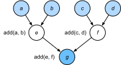

13.1. 编译器和解释器¶
到目前为止，本书重点关注的是命令式编程，它使用 print、+ 和
if 等语句来改变程序的状态。请看下面这个简单命令式程序的例子。
def add(a, b):
return a + b
def fancy_func(a, b, c, d):
e = add(a, b)
f = add(c, d)
g = add(e, f)
return g
print(fancy_func(1, 2, 3, 4))
def add(a, b):
return a + b
def fancy_func(a, b, c, d):
e = add(a, b)
f = add(c, d)
g = add(e, f)
return g
print(fancy_func(1, 2, 3, 4))
def add(a, b):
return a + b
def fancy_func(a, b, c, d):
e = add(a, b)
f = add(c, d)
g = add(e, f)
return g
print(fancy_func(1, 2, 3, 4))
Python 是一种解释型语言。在求值上面的 fancy_func
函数时，它会按顺序执行构成函数体的各项操作。也就是说，它会求值
e = add(a, b)，并把结果存储为变量
e，从而改变程序的状态。接下来的两条语句 f = add(c, d) 和
g = add(e, f)
也会以类似方式执行，完成加法运算并把结果存储为变量。图13.1.1
展示了数据的流动。

图13.1.1 命令式程序中的数据流。¶
虽然命令式编程很方便，但它可能效率不高。一方面，即使 add 函数在
fancy_func 中被反复调用，Python
还是会逐个执行这三次函数调用。如果这些调用是在 GPU（甚至多个
GPU）上执行的，那么 Python
解释器带来的开销可能会变得难以承受。此外，它还需要保存变量 e 和
f 的值，直到 fancy_func 中的所有语句都执行完毕。这是因为在执行完
e = add(a, b) 和 f = add(c, d) 这两条语句之后，我们并不知道变量
e 和 f 是否会被程序的其他部分使用。
13.1.1. 符号式编程¶
考虑另一种方式，即符号式编程：在这种方式下，通常只有在整个过程被完整定义之后才执行计算。包括 Theano 和 TensorFlow（后者已经获得了命令式扩展）在内的多个深度学习框架都采用这种策略。它通常包括以下步骤：
定义要执行的操作。
把操作编译成一个可执行的程序。
提供所需的输入，并调用编译后的程序来执行。
这样可以进行大量的优化。首先，在许多情况下我们可以跳过 Python
解释器，从而消除一个可能变得显著的性能瓶颈——当多个高速 GPU 搭配 CPU
上单个 Python 线程时尤其如此。 其次，编译器可能把上面的代码优化并改写成
print((1 + 2) + (3 + 4))，甚至改写成
print(10)。这是可能的，因为编译器在把代码转换成机器指令之前能够看到完整的代码。例如，只要某个变量不再需要，它就可以释放内存（或者干脆从不分配内存）。或者，它可以把整段代码变换成等价的一段。
为了更好地理解这一点，请看下面这个对命令式编程的模拟（毕竟用的还是
Python）。
def add_():
return '''
def add(a, b):
return a + b
'''
def fancy_func_():
return '''
def fancy_func(a, b, c, d):
e = add(a, b)
f = add(c, d)
g = add(e, f)
return g
'''
def evoke_():
return add_() + fancy_func_() + 'print(fancy_func(1, 2, 3, 4))'
prog = evoke_()
print(prog)
y = compile(prog, '', 'exec')
exec(y)
def add_():
return '''
def add(a, b):
return a + b
'''
def fancy_func_():
return '''
def fancy_func(a, b, c, d):
e = add(a, b)
f = add(c, d)
g = add(e, f)
return g
'''
def evoke_():
return add_() + fancy_func_() + 'print(fancy_func(1, 2, 3, 4))'
prog = evoke_()
print(prog)
y = compile(prog, '', 'exec')
exec(y)
def add_():
return '''
def add(a, b):
return a + b
'''
def fancy_func_():
return '''
def fancy_func(a, b, c, d):
e = add(a, b)
f = add(c, d)
g = add(e, f)
return g
'''
def evoke_():
return add_() + fancy_func_() + 'print(fancy_func(1, 2, 3, 4))'
prog = evoke_()
print(prog)
y = compile(prog, '', 'exec')
exec(y)
命令式（解释型）编程与符号式编程的区别如下：
命令式编程更容易。在 Python 中使用命令式编程时，大部分代码都直截了当、易于编写。调试命令式编程代码也更容易，因为更容易获取并打印所有相关的中间变量值，或者使用 Python 内置的调试工具。
符号式编程更高效，也更容易移植。符号式编程使编译期的代码优化更容易，同时还能把程序移植成与 Python 无关的形式。这使程序可以在非 Python 环境中运行，从而避免任何与 Python 解释器相关的潜在性能问题。
13.1.2. 混合式编程¶
从历史上看，大多数深度学习框架都在命令式方法与符号式方法之间做出选择。例如，Theano、TensorFlow（受前者启发）、Keras 和 CNTK 以符号方式构建模型。相反，Chainer 和 PyTorch 采用命令式方法。在后来的修订版中，TensorFlow 2.0 和 Keras 加入了命令式模式。
如上所述，PyTorch 基于命令式编程，并使用动态计算图。为了利用符号式编程的可移植性和效率，开发者考虑过能否把两种编程范式的优点结合起来。由此产生了 torchscript：它让用户可以用纯命令式编程进行开发和调试，同时在需要产品级计算性能和部署时，能够把大多数程序转换成符号式程序来运行。
在设计 Gluon 时，开发者考虑过能否把两种编程范式的优点结合起来。由此产生了一种混合模式：用户可以用纯命令式编程进行开发和调试，同时在需要产品级计算性能和部署时，能够把大多数程序转换成符号式程序来运行。
在实践中，这意味着我们使用 HybridBlock 或 HybridSequential
类来构建模型。默认情况下，二者中任何一个的执行方式都与命令式编程中执行
Block 或 Sequential 类的方式相同。 HybridSequential 类是
HybridBlock 的子类（就像 Sequential 是 Block
的子类一样）。调用 hybridize 函数时，Gluon
会把模型编译成符号式编程中使用的形式。这样就能优化计算密集的组件，而无须牺牲模型的实现方式。下面我们将说明这样做的好处，重点关注顺序模型和块。
命令式编程范式现在已成为 TensorFlow 2
的默认范式，这对刚接触该语言的人来说是个可喜的变化。然而，同样的符号式编程技术以及由此得到的计算图在
TensorFlow 中依然存在，并且可以通过易于使用的 tf.function
装饰器来使用。这为 TensorFlow
带来了命令式编程范式，让用户可以定义更直观的函数，然后利用 TensorFlow
团队称为
autograph
的特性，把它们包装起来并自动编译成计算图。
13.1.3. 混合化 Sequential 类¶
了解混合式编程如何工作的最简便方法，是考察具有多个层的深度网络。通常，Python
解释器需要执行所有层的代码，才能生成一条可以转发给 CPU 或 GPU
的指令。对于单个（快速的）计算设备来说，这不会造成什么大问题。另一方面，如果我们使用像
AWS P3dn.24xlarge 实例这样的高级 8-GPU 服务器，Python 就会难以让所有 GPU
保持忙碌。单线程的 Python 解释器在这里成了瓶颈。让我们看看如何通过把
Sequential 替换为
HybridSequential，为代码中相当大的一部分解决这个问题。我们先定义一个简单的
MLP。
import torch
from torch import nn
from d2l import torch as d2l
# Factory for networks
def get_net():
net = nn.Sequential(nn.Linear(512, 256),
nn.ReLU(),
nn.Linear(256, 128),
nn.ReLU(),
nn.Linear(128, 2))
return net
x = torch.randn(size=(1, 512))
net = get_net()
net(x)
用 torch.jit.script 函数转换模型后，我们能够编译并优化 MLP
中的计算。模型的计算结果保持不变。
net = torch.jit.script(net)
net(x)
这看起来简直好得令人难以置信：编写与之前相同的代码，然后简单地用
torch.jit.script
转换模型。一旦这样做，网络就被优化了（我们将在下面基准测试其性能）。
from mxnet import np, npx
from mxnet.gluon import nn
from d2l import mxnet as d2l
npx.set_np()
# Factory for networks
def get_net():
net = nn.HybridSequential()
net.add(nn.Dense(256, activation='relu'),
nn.Dense(128, activation='relu'),
nn.Dense(2))
net.initialize()
return net
x = np.random.normal(size=(1, 512))
net = get_net()
net(x)
通过调用 hybridize 函数，我们能够编译并优化 MLP
中的计算。模型的计算结果保持不变。
net.hybridize()
net(x)
这看起来简直好得令人难以置信：只需把一个块指定为
HybridSequential，编写与之前相同的代码，然后调用
hybridize。一旦这样做，网络就被优化了（我们将在下面基准测试其性能）。遗憾的是，这并非对每一层都能神奇地奏效。也就是说，如果某一层继承自
Block 类而不是 HybridBlock 类，那么它就不会被优化。
import tensorflow as tf
from tensorflow.keras.layers import Dense
from d2l import tensorflow as d2l
# Factory for networks
def get_net():
net = tf.keras.Sequential()
net.add(Dense(256, input_shape = (512,), activation = "relu"))
net.add(Dense(128, activation = "relu"))
net.add(Dense(2, activation = "linear"))
return net
x = tf.random.normal([1,512])
net = get_net()
net(x)
以前，TensorFlow 中构建的所有函数都会构建成计算图，因此默认就由 JIT 编译。然而，随着 TensorFlow 2.X 和 EagerTensor 的发布，这不再是默认行为。 我们可以用 tf.function 重新启用这一功能。tf.function 更常用作函数装饰器，但也可以像普通 Python 函数那样直接调用，如下所示。模型的计算结果保持不变。
net = tf.function(net)
net(x)
这看起来简直好得令人难以置信：编写与之前相同的代码，然后简单地用
tf.function 转换模型。一旦这样做，网络就会作为计算图构建在
TensorFlow 的 MLIR
中间表示中，并在编译器层面进行大量优化，以便快速执行（我们将在下面基准测试其性能）。
在调用 tf.function() 时显式添加 jit_compile = True 标志，可以在
TensorFlow 中启用 XLA（Accelerated Linear
Algebra）功能。在某些情况下，XLA 可以进一步优化 JIT
编译的代码。不显式指定该标志也会启用图模式执行，不过 XLA
可以让某些大型线性代数运算（类似我们在深度学习应用中看到的那类运算）快得多，在
GPU 环境中尤其如此。
13.1.3.1. 通过混合式编程加速¶
为了展示编译带来的性能提升，我们比较混合前后求值 net(x)
所需的时间。让我们先定义一个类来测量这一时间。在本章中，当我们着手测量（并改进）性能时，它会派上用场。
#@save
class Benchmark:
"""For measuring running time."""
def __init__(self, description='Done'):
self.description = description
def __enter__(self):
self.timer = d2l.Timer()
return self
def __exit__(self, *args):
print(f'{self.description}: {self.timer.stop():.4f} sec')
现在我们可以调用网络两次，一次使用 torchscript，一次不使用。
net = get_net()
with Benchmark('Without torchscript'):
for i in range(1000): net(x)
net = torch.jit.script(net)
with Benchmark('With torchscript'):
for i in range(1000): net(x)
从上面的结果可以看到，在用 torch.jit.script 函数对 nn.Sequential
实例进行脚本化之后，计算性能通过符号式编程得到了提高。
#@save
class Benchmark:
"""For measuring running time."""
def __init__(self, description='Done'):
self.description = description
def __enter__(self):
self.timer = d2l.Timer()
return self
def __exit__(self, *args):
print(f'{self.description}: {self.timer.stop():.4f} sec')
现在我们可以调用网络两次，一次采用混合式编程，一次不采用。
net = get_net()
with Benchmark('Without hybridization'):
for i in range(1000): net(x)
npx.waitall()
net.hybridize()
with Benchmark('With hybridization'):
for i in range(1000): net(x)
npx.waitall()
从上面的结果可以看到，在 HybridSequential 实例调用 hybridize
函数之后，计算性能通过符号式编程得到了提高。
#@save
class Benchmark:
"""For measuring running time."""
def __init__(self, description='Done'):
self.description = description
def __enter__(self):
self.timer = d2l.Timer()
return self
def __exit__(self, *args):
print(f'{self.description}: {self.timer.stop():.4f} sec')
现在我们可以调用网络三次：一次以动态图方式执行，一次以图模式执行，再一次使用 JIT 编译的 XLA。
net = get_net()
with Benchmark('Eager Mode'):
for i in range(1000): net(x)
net = tf.function(net)
with Benchmark('Graph Mode'):
for i in range(1000): net(x)
从上面的结果可以看到，在用 tf.function 函数对
tf.keras.Sequential 实例进行脚本化之后，计算性能通过 tensorflow
中的图模式执行、借助符号式编程得到了提高。
13.1.3.2. 序列化¶
编译模型的好处之一在于，我们可以把模型及其参数序列化（保存）到磁盘。这使我们能够以不依赖于所选前端语言的方式来存储模型。这样，我们就可以把训练好的模型部署到其他设备上，并轻松使用其他前端编程语言。同时，代码往往比命令式编程所能达到的速度更快。让我们看看
save 函数的实际效果。
net.save('my_mlp')
!ls -lh my_mlp*
编译模型的好处之一在于，我们可以把模型及其参数序列化（保存）到磁盘。这使我们能够以不依赖于所选前端语言的方式来存储模型。这样，我们就可以把训练好的模型部署到其他设备上，并轻松使用其他前端编程语言。同时，代码往往比命令式编程所能达到的速度更快。让我们看看
export 函数的实际效果。
net.export('my_mlp')
!ls -lh my_mlp*
模型被分解为一个（大型二进制）参数文件和一个 JSON 描述文件，后者描述执行模型计算所需的程序。这些文件可以被 Python 或 MXNet 支持的其他前端语言读取，例如 C++、R、Scala 和 Perl。让我们看看模型描述文件的前几行。
!head my_mlp-symbol.json
前面我们演示了，在调用 hybridize
函数之后，模型能够获得更优越的计算性能和可移植性。不过请注意，混合化可能影响模型的灵活性，尤其是在控制流方面。
此外，与需要使用 forward 函数的 Block 实例相反，对于
HybridBlock 实例，我们需要使用 hybrid_forward 函数。
class HybridNet(nn.HybridBlock):
def __init__(self, **kwargs):
super(HybridNet, self).__init__(**kwargs)
self.hidden = nn.Dense(4)
self.output = nn.Dense(2)
def hybrid_forward(self, F, x):
print('module F: ', F)
print('value x: ', x)
x = F.npx.relu(self.hidden(x))
print('result : ', x)
return self.output(x)
上面的代码实现了一个具有 4 个隐藏单元和 2
个输出的简单网络。hybrid_forward 函数多接受一个参数
F。这是必需的，因为根据代码是否已经混合化，它会使用稍有不同的库（ndarray
或 symbol）来处理。这两个类执行的功能非常相似，MXNet
会自动确定该用哪个参数。为了理解发生了什么，我们在函数调用过程中打印这些参数。
net = HybridNet()
net.initialize()
x = np.random.normal(size=(1, 3))
net(x)
重复前向计算会得到相同的输出（细节从略）。现在我们来看看，如果调用
hybridize 函数会发生什么。
net.hybridize()
net(x)
现在我们不再使用 ndarray，而是为 F 使用 symbol
模块。此外，尽管输入是 ndarray
类型，流经网络的数据现在在编译过程中被转换成了 symbol
类型。重复调用该函数会得到出人意料的结果：
net(x)
这与我们之前看到的情况大不相同。hybrid_forward 中定义的所有 print
语句都被省略了。确实，混合化之后，net(x) 的执行不再涉及 Python
解释器。这意味着任何多余的 Python 代码（例如 print
语句）都会被省略，以换取更精简的执行和更好的性能。取而代之的是，MXNet
直接调用 C++ 后端。还要注意，有些函数在 symbol 模块中不受支持（例如
asnumpy），并且诸如 a += b 和 a[:] = a + b
这样的就地操作必须改写为
a = a + b。尽管如此，只要速度重要，编译模型就是值得的。收益从几个百分点到两倍以上的速度不等，取决于模型的复杂度、CPU
的速度以及 GPU 的速度和数量。
编译模型的好处之一在于，我们可以把模型及其参数序列化（保存）到磁盘。这使我们能够以不依赖于所选前端语言的方式来存储模型。这样，我们就可以把训练好的模型部署到其他设备上，并轻松使用其他前端编程语言，或者在一台服务器上执行训练好的模型。同时，代码往往比命令式编程所能达到的速度更快。
在 TensorFlow 中用于保存的低层 API 是 tf.saved_model。 让我们看看
saved_model 实例的实际效果。
net = get_net()
tf.saved_model.save(net, 'my_mlp')
!ls -lh my_mlp*
13.1.4. 小结¶
命令式编程使设计新模型变得容易，因为可以编写带有控制流的代码，并且能够利用大量 Python 软件生态。
符号式编程要求我们先指定程序并在执行之前编译它。好处是性能得到改进。
MXNet 能够根据需要把两种方法的优点结合起来。
由
HybridSequential和HybridBlock类构建的模型，能够通过调用hybridize函数把命令式程序转换为符号式程序。